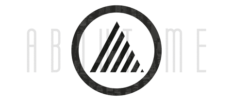
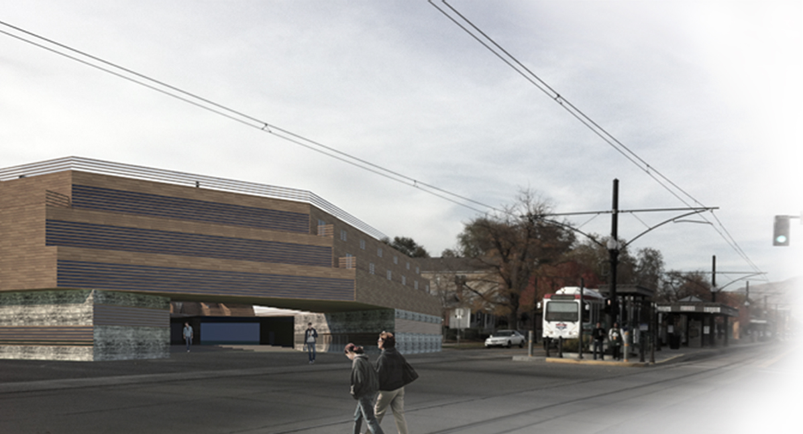
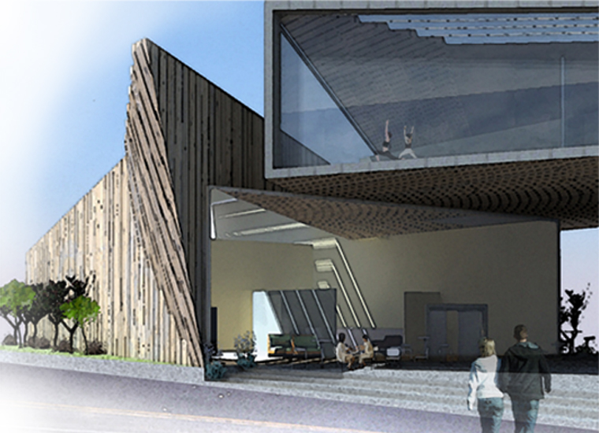

A passionate urban strategist, interdisciplinary designer, life traveller, and serial coffee drinker. Originally from Utah, I did my graduate studies in New York and am currently residing in Los Angeles. My current work focuses on urban displacement and land rights in Rio de Janeiro's favelas and explores the role of design in processes of change-making within Rio's current condition. I hope to continue to study the complex inner workings of the urban as well as to design alternative ways of thinking about inclusion, cohabitation and co-creation in the context of the city's landscape.
Here you will find a collection of my academic, professional and personal work.
To view an updated version of my resumé, visit the link below.
Resumé
Rethinking the Democratic Paradox in Rio de Janeiro Through Organizational Tools for Land Rights
This year-long Master's Thesis seeks to explore the dialectical relationships between the multiple policy perspectives of the federal government, the municipality and the favelados to the resettlement of favela residents and the gentrification of their neighborhoods in the wake of the 2014 World Cup and the 2016 Summer Olympics.
Based on qualitative and quantitative studies of the commuter vans that run between New York City's satellite Chinatowns, myself and a group of four others designed a participatory process for communities that are underserved by public transportation to co-create their own mobility systems. While participatory processes have become commonplace in urban design, mobility projects are typically approached from a top-down perspective.
Mapping Los Angeles' Immigrant Flows
Environmental Fixes
+ Urban Problems
How Common Perceptions of Nature are Constructing Environmentalist Market-Based Solutions and Aiding the Capital-Driven Climate Crisis
This text explores the dialectic between social preservation and the preservation of nature; which have, for too long, been treated as separate matters. I argue that when social and environmental systems are
examined as separate devices operating under market-driven influences, it is realized that the two are
conjunctive and that one cannot be discussed without the other. Both the preservation of nature and the
modern environmental movement have been tainted by the natural imaginary of anti-modern and
post-frontier romanticism, and as such, this is where modern reform environmentalism has derived much
of its discourse...

Contracted Designwork + Communications
Personal explorations in hands-on design.
Mediums include: wood, fabric, graphite, charcoal, oil, ink + watercolor.

Music Venue + Multi-Family Housing
The Granary District of Salt Lake City attracts a multitude of local artists and musicians as well as being home to a large low-income population. This low-income housing unit serves as an artist's community, specifically for musicians. Musical artists can collaborate, practice, record, perform and live in this space while non-residents can enjoy local outdoor and indoor shows.

Holistic Healing Clinic
Yoga is a moving meditation. The transitional flow from one position to the next is just as important as the pose itself. Just as one would transition through the poses of a vinyasa, one should transition through a building - with fluidity.
The holistic health yoga clinic for downtown Salt Lake City is an enviroment designed to promote community healthand wellness through the combination of eastern and western medicine.

You can view my public portfolio and other personal publications at my issuu page linked below